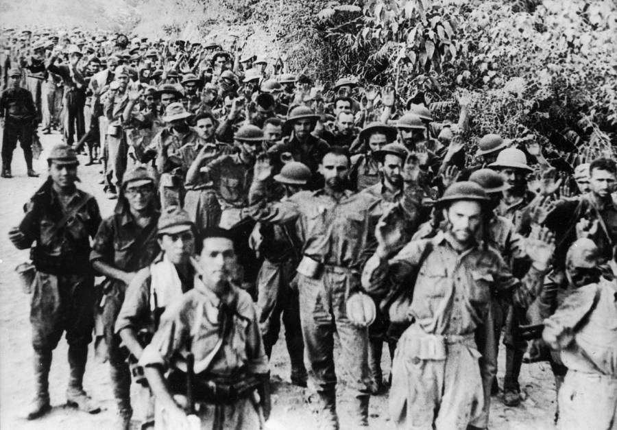
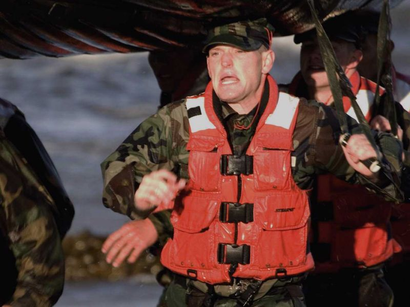

Created: 11 July 2020 / Finished: xx xxx 2020 / Modified: xx xxx 2020
In 2018, I participated in the Bataan Memorial Death March, a rucking event meant to commemorate the Bataan Death March, in which tens of thousands of American and Filipino POWs were marched for 60 miles until they arrived at their destination or died, whichever came first. The Memorial March course is an arduous 26.2 miles of road, soft sand, and hard-packed dirt—and somehow, despite seemingly going uphill all the time, a downhill never reveals itself, much like the running adage "there's no such thing as a tailwind". Participants can sign up for the light or heavy division, the latter requiring you to carry at least 35 lb (preferably in the form of donatable goods). I happily signed up for the heavy division, didn't do any training, and naively bought two 20 lb rice bags the day prior to the race, thinking the extra 5 lb wouldn't make a difference.
It was the worst physical experience of my life. What started at 6:00am in the cool New Mexican breeze ended 9:13:56 hours later in the warm afternoon sun I had come to loathe over the past 5 hours. What started out at a run passing numerous people as the rice packs jiggled in my sack slowly, but surely, turned into a slogging walk. What started out as a fun and jovial activity for my family turned sour as fatigue spread from the legs to the back to the mind to the soul. The hills were never-ending, the pliable sand unforgiving, and my many-years-old running shoes ill-equipped for the job that hiking shoes and military boots were designed for. There was no one-specific spot that hurt the worst. Blisters were quickly forming on my feet and the 50 lb of pack had been digging into my shoulders since the beginning. I vowed to never again even consider doing it again, going so far as to make a pact with my father and brother to remind me of the pain and suffering I endured if I so much as brought up the idea. I gorged on the fruit and Gatorade at the rest stations, but to no avail: the calories in could not keep up with the ever-growing fatigue overwhelming my body.
And yet I still had fun, because "it doesn't have to be fun to be fun". As we crossed the finish line and accepted our victory platter, the lessons started pouring in, albeit a bit slower than the well-deserved food.
First, you really are capable of more than you think. Cliche, yes, but true. Around mile 15, I was practically searching for a white flag amongst the crowd so I could call it quits. But simply by putting one foot ahead of the other and making it to mini-markers for the next 11 miles, I was able to complete it. During their BUD/S training, Navy SEAL candidates are put through the infamous gauntlet aptly named as "Hell Week". Candidates are put through cold-water exercises (see the temperature of Coronado waters here) and run upwards of 200 miles, all while operating on minimal sleep (but a lot of food!). Many quit and only a few persevere. But almost all who are looking down the barrel think they won't complete it. Yet they do.
Second, pain fades from memory at a rate independent of both the duration and difficulty of the effort. After the March, all-out 5k and mile races, and even brutal conditioning sessions, I am "locally" recovered, meaning I am still "globally" fatigued (there's no way I could do another one of those), but my heart rate is back to normal and I feel recovered. This provides a false sense of just how difficult the event was when thinking back on it later, a dangerous process. The only way to mitigate the danger—because misremembrance is guaranteed—is to record just how horrible the event is in real-time. My method of telling my father and brother to remind me of the pain was flawed. It wasn't detailed ("Ethan, remember how much that hurt!" isn't very descriptive or daunting) nor concrete. Writing or recording your account is much more robust.
Third,
As we drove down the interstate in the black night of west Texas, I realized the value of an event like the one I had just endured. [FINISH]
So here's my idea for the 2020 version of the Bataan Memorial Death March: walking for 24 hours straight. (I've been dealing with back issues due to squatting since May 2020, so rucking is out of the question. The extra 15 hours should make up for the lack of a load.)
A few different things are tested during this:
A few specifics about the rules I am setting:


| Time (hr) | Weight (lb / kg) |
|---|---|
| 0 | x / x |
| 12 | x / x |
| 24 | x / x |